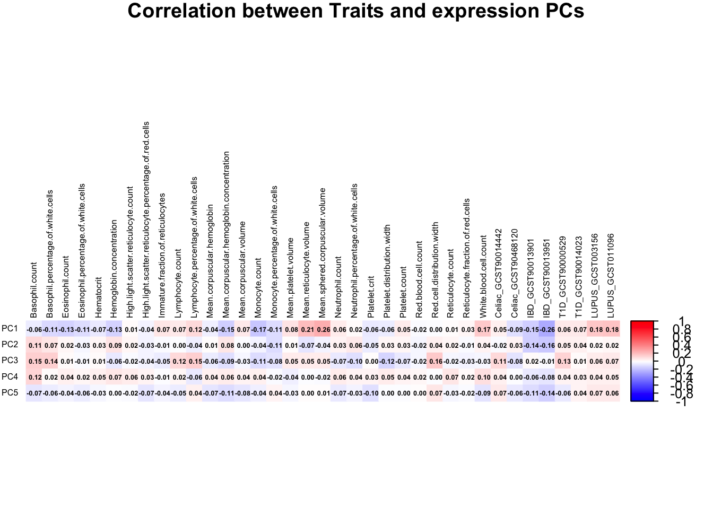
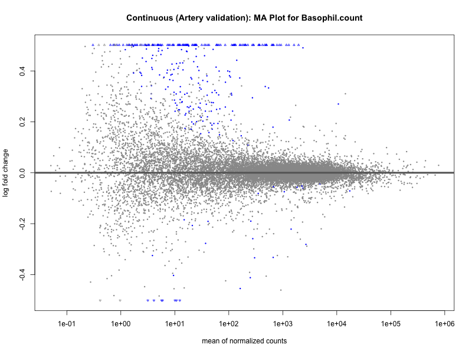

Validation
Last updated: 2025-05-14
Checks: 7 0
Knit directory: prs/
This reproducible R Markdown analysis was created with workflowr (version 1.7.1). The Checks tab describes the reproducibility checks that were applied when the results were created. The Past versions tab lists the development history.
Great! Since the R Markdown file has been committed to the Git repository, you know the exact version of the code that produced these results.
Great job! The global environment was empty. Objects defined in the global environment can affect the analysis in your R Markdown file in unknown ways. For reproduciblity it’s best to always run the code in an empty environment.
The command set.seed(20250417) was run prior to running
the code in the R Markdown file. Setting a seed ensures that any results
that rely on randomness, e.g. subsampling or permutations, are
reproducible.
Great job! Recording the operating system, R version, and package versions is critical for reproducibility.
Nice! There were no cached chunks for this analysis, so you can be confident that you successfully produced the results during this run.
Great job! Using relative paths to the files within your workflowr project makes it easier to run your code on other machines.
Great! You are using Git for version control. Tracking code development and connecting the code version to the results is critical for reproducibility.
The results in this page were generated with repository version b2c577c. See the Past versions tab to see a history of the changes made to the R Markdown and HTML files.
Note that you need to be careful to ensure that all relevant files for
the analysis have been committed to Git prior to generating the results
(you can use wflow_publish or
wflow_git_commit). workflowr only checks the R Markdown
file, but you know if there are other scripts or data files that it
depends on. Below is the status of the Git repository when the results
were generated:
Ignored files:
Ignored: .DS_Store
Ignored: .Rhistory
Ignored: .Rproj.user/
Ignored: analysis/.DS_Store
Ignored: data/.DS_Store
Untracked files:
Untracked: analysis/continuous_artery/
Untracked: analysis/continuous_wb/
Untracked: analysis/metadata.txt
Untracked: analysis/metadata_artery.txt
Untracked: analysis/metadata_artery_quantile.txt
Untracked: analysis/metadata_quantile.txt
Untracked: analysis/normalized_counts.rda
Untracked: analysis/quantile_artery/
Untracked: analysis/quantile_wb/
Untracked: analysis/vst norm counts.rda
Untracked: data/Artery_Aorta.v8.covariates.txt
Untracked: data/GTEx_v8.bk
Untracked: data/GTEx_v8.rds
Untracked: data/T2D_hmPOS_GRCh38.txt
Untracked: data/Whole_Blood.v8.covariates.txt
Untracked: data/blood_cell/
Untracked: data/gene_reads_2017-06-05_v8_artery_aorta.gct
Untracked: data/gene_reads_2017-06-05_v8_whole_blood.gct
Untracked: data/gene_tpm_2017-06-05_v8_whole_blood.gct.gz
Untracked: data/immune/
Untracked: data/protein-coding_gene.txt
Unstaged changes:
Deleted: analysis/QC.Rmd
Deleted: analysis/normalized_counts.txt
Modified: analysis/prs_blood_cell.txt
Modified: prs.Rproj
Note that any generated files, e.g. HTML, png, CSS, etc., are not included in this status report because it is ok for generated content to have uncommitted changes.
These are the previous versions of the repository in which changes were
made to the R Markdown (analysis/validation.Rmd) and HTML
(docs/validation.html) files. If you’ve configured a remote
Git repository (see ?wflow_git_remote), click on the
hyperlinks in the table below to view the files as they were in that
past version.
| File | Version | Author | Date | Message |
|---|---|---|---|---|
| Rmd | b2c577c | ElisaChen | 2025-05-14 | workflowr::wflow_publish("analysis/validation.Rmd") |
Artery Aorta Validation
Correlation between PRS & expression PCs
# load prs & pcs
metadata_file <- "analysis/metadata_artery.txt"
metadata <- read.csv(metadata_file, header = T, sep = "\t", stringsAsFactors = T)
metadata$sex <- as.factor(metadata$sex)
traits <- metadata[, 7:43]
pc <- metadata[, 1:5]
# Calculate the correlation between each trait and each PC
correlation_matrix <- cor(traits, pc)
range(correlation_matrix)[1] -0.2613287 0.2585593correlation_matrix <- t(correlation_matrix)
# Create the heatmap using corrplot
corrplot(correlation_matrix, method = "color",
col = colorRampPalette(c("blue", "white", "red"))(200), # color palette
addCoef.col = "black", # Add correlation coefficients to the plot
number.cex = 0.4, # Adjust the font size of the numbers
tl.col = "black", # text label color
tl.srt = 90, # rotate text labels
tl.cex = 0.5,
title = "Correlation between Traits and expression PCs",
mar = c(0, 0, 1, 0)
)
Perform DESeq2 differential expression analysis for each trait
# Load the gene expression data
gene_expr_file <- "data/gene_reads_2017-06-05_v8_artery_aorta.gct"
raw_count_df <- fread(gene_expr_file, header = TRUE, sep = "\t", drop = "id")
# load protein_coding list
protein_coding <- fread("data/protein-coding_gene.txt", sep = "\t")
protein_coding <- protein_coding[, c("symbol", "ensembl_gene_id")]
# keep only protein-coding genes
raw_count_df <- raw_count_df[raw_count_df$Description %in% protein_coding$symbol, ]
id <- raw_count_df$Name
raw_count <- raw_count_df[, -c(1:2)]
# modify GTEx sample names matching names used in PRS data
colnames(raw_count) <- sub("^(GTEX-[^-.]+).*", "\\1", colnames(raw_count))
matching_samples <- intersect(rownames(metadata), colnames(raw_count))
final_count <- raw_count[ , ..matching_samples]
# prefilter: keep only rows that have a count of at least 10
keep_genes <- rowSums(final_count >= 10) > 0
final_count <- final_count[keep_genes, ]
id <- id[keep_genes]
dim(final_count)
# Loop through each trait and run DESeq2
for (trait in colnames(traits)) {
# Standardize PRS for the current trait
prs_trait <- traits[,trait]
prs_trait <- scale(prs_trait) # Standardize PRS to mean = 0, sd = 1
# Add the standardized PRS to the metadata for continuous trait
metadata[,trait] <- prs_trait
# Create the DESeqDataSet for the current trait
dds <- DESeqDataSetFromMatrix(
countData = as.matrix(final_count), # Raw counts
colData = metadata[, c(1:6, which(colnames(metadata) == trait))],
design = as.formula(paste("~ PC1 + PC2 + PC3 + PC4 + PC5 + sex +", trait))
)
rownames(dds) <- id
# Run DESeq2 analysis
dds <- DESeq(dds, parallel = TRUE, BPPARAM = MulticoreParam(4))
# Get the results for the current trait
res <- results(dds)
# Save the results to a file
write.csv(res, paste0("differential_expression_", trait, "_results_artery_validation.csv"))
# print a summary of the results
print(paste("Results for trait:", trait))
print(summary(res))
# plot the MA-plot for the current trait
png(paste0("ma_plot_", trait, "_artery_validation.png"), width = 800, height = 600)
plotMA(res, main = paste("Continuous (Artery validation): MA Plot for", trait))
dev.off()
# volcano plot
res_tableOE <- as.data.frame(res)
res_tableOE$gene_name <- raw_count_df$Description[keep_genes]
res_tableOE <- mutate(res_tableOE, threshold_OE = padj < 0.1)
res_tableOE <- res_tableOE %>% arrange(padj) %>% mutate(genelabels = "")
res_tableOE$genelabels[1:10] <- res_tableOE$gene_name[1:10]
volcano_plot <- ggplot(res_tableOE, aes(x = log2FoldChange, y = -log10(padj))) +
geom_point(aes(colour = threshold_OE)) +
geom_text_repel(aes(label = genelabels)) +
ggtitle(label = paste("Continuous: Volcano Plot for", trait),
subtitle = "Artery Aorta validation") +
xlab("log2 fold change") +
ylab("-log10 adjusted p-value") +
theme(legend.position = "none",
plot.title = element_text(size = rel(1.5), hjust = 0.5),
axis.title = element_text(size = rel(1.25)))
# Save the volcano plot
png(paste0("volcano_plot_", trait, "_artery_validation.png"), width = 800,
height = 600)
print(volcano_plot)
dev.off()
}metadata_file <- "analysis/metadata_artery_quantile.txt"
metadata <- read.csv(metadata_file, header = T, sep = "\t", stringsAsFactors = T)
metadata$sex <- as.factor(metadata$sex)
traits <- metadata[, 7:43]
# Loop through each trait and run DESeq2
for (trait in colnames(traits)) {
# Create the DESeqDataSet for the current trait
dds <- DESeqDataSetFromMatrix(
countData = as.matrix(final_count), # Raw counts
colData = metadata[, c(1:6, which(colnames(metadata) == trait))],
design = as.formula(paste("~ PC1 + PC2 + PC3 + PC4 + PC5 + sex +", trait))
)
rownames(dds) <- id
# Run DESeq2 analysis
dds <- DESeq(dds, parallel = TRUE, BPPARAM = MulticoreParam(4))
# Get the results for the current trait
res <- results(dds)
# Save the results to a file
write.csv(res, paste0("differential_expression_", trait, "_quantile_results_artery_validation.csv"))
# print a summary of the results
print(paste("Results for trait:", trait))
print(summary(res))
# plot the MA-plot for the current trait
png(paste0("ma_plot_quantile_", trait, "_artery_validation.png"), width = 800, height = 600)
plotMA(res, main = paste("Quantile (Artery Validation): MA Plot for", trait))
dev.off()
# volcano plot
res_tableOE <- as.data.frame(res)
res_tableOE$gene_name <- raw_count_df$Description[keep_genes]
res_tableOE <- mutate(res_tableOE, threshold_OE = padj < 0.1 &
abs(log2FoldChange) >= 0.5)
res_tableOE <- res_tableOE %>% arrange(padj) %>% mutate(genelabels = "")
res_tableOE$genelabels[1:10] <- res_tableOE$gene_name[1:10]
volcano_plot <- ggplot(res_tableOE, aes(x = log2FoldChange, y = -log10(padj))) +
geom_point(aes(colour = threshold_OE)) +
geom_text_repel(aes(label = genelabels)) +
ggtitle(paste("Quantile:Volcano Plot for", trait),
subtitle = "Artery Aorta validation") +
xlab("log2 fold change") +
ylab("-log10 adjusted p-value") +
theme(legend.position = "none",
plot.title = element_text(size = rel(1.5), hjust = 0.5),
axis.title = element_text(size = rel(1.25)))
# Save the volcano plot
png(paste0("volcano_plot_quantile_", trait, "_artery_validation.png"), width = 800, height = 600)
print(volcano_plot)
dev.off()
}Gene enrichment Analysis
BgRatio: Number of all genes in specific GO term / Number of universal genes
GeneRatio: Number of genes enriched in specific term / Number of input genes
FoldEnrichment: GeneRatio / BgRatio
# continous
dir_path <- "analysis/continuous_artery"
files <- list.files(dir_path, pattern = "differential_expression_.*_results_artery_validation.csv", full.names = TRUE)
for (file in files) {
trait <- gsub("differential_expression_(.*)_results_artery_validation.csv", "\\1", basename(file))
trait
res_tableOE <- read.csv(file, header = T, row.names = 1)
deGenes <- res_tableOE[res_tableOE$padj < 0.1 &
abs(res_tableOE$log2FoldChange) >= 0.5, ]
deGenes$gene_id <- gsub("\\.\\d+$", "", rownames(deGenes))
gse <- enrichGO(gene = deGenes$gene_id, ont = "BP",
OrgDb ="org.Hs.eg.db", keyType = "ENSEMBL")
write.csv(as.data.frame(gse), file = paste0("GO_enrichment_", trait, "_results_artery_validation.csv"))
gse <- as.data.frame(gse)
gse$GeneRatio_num <- as.numeric(sapply(strsplit(gse$GeneRatio, "/"),
function(x) x[1])) /
as.numeric(sapply(strsplit(gse$GeneRatio, "/"), function(x) x[2]))
gse$BgRatio_num <- as.numeric(sapply(strsplit(gse$BgRatio, "/"), function(x) x[1])) /
as.numeric(sapply(strsplit(gse$BgRatio, "/"), function(x) x[2]))
gse <- cbind(gse, FoldEnrich = gse$GeneRatio_num/gse$BgRatio_num)
if (nrow(gse) >= 20) {
enrich_plot <- plotEnrich(gse[1:20,], plot_type = "dot", scale_ratio = 0.5) +
labs(title = paste("Continuous: Enrichment plot for", trait),
subtitle = "Artery Aorta validation") +
theme(plot.title = element_text(size = 10))
}else{
enrich_plot <- plotEnrich(gse, plot_type = "dot", scale_ratio = 0.5) +
labs(title = paste("Continuous: Enrichment plot for", trait),
subtitle = "Artery Aorta validation") +
theme(plot.title = element_text(size = 10))
}
ggsave(paste0("enrichment_plot_", trait, "_artery_validation.png"), plot = enrich_plot, width = 8, height = 6)
}# quantile
dir_path <- "analysis/quantile_artery"
files <- list.files(dir_path, pattern = "differential_expression_.*_quantile_results_artery_validation.csv",
full.names = TRUE)
for (file in files) {
trait <- gsub("differential_expression_(.*)_quantile_results_artery_validation.csv", "\\1", basename(file))
trait
res_tableOE <- read.csv(file, header = T, row.names = 1)
deGenes <- res_tableOE[res_tableOE$padj < 0.1 &
abs(res_tableOE$log2FoldChange) >= 0.5, ]
deGenes$gene_id <- gsub("\\.\\d+$", "", rownames(deGenes))
gse <- enrichGO(gene = deGenes$gene_id, ont = "BP",
OrgDb ="org.Hs.eg.db", keyType = "ENSEMBL")
write.csv(as.data.frame(gse), file = paste0("GO_enrichment_quantile_", trait, "_results_artery_validation.csv"))
gse <- as.data.frame(gse)
gse$GeneRatio_num <- as.numeric(sapply(strsplit(gse$GeneRatio, "/"),
function(x) x[1])) /
as.numeric(sapply(strsplit(gse$GeneRatio, "/"), function(x) x[2]))
gse$BgRatio_num <- as.numeric(sapply(strsplit(gse$BgRatio, "/"), function(x) x[1])) /
as.numeric(sapply(strsplit(gse$BgRatio, "/"), function(x) x[2]))
gse <- cbind(gse, FoldEnrich = gse$GeneRatio_num/gse$BgRatio_num)
if (nrow(gse) >= 20) {
enrich_plot <- plotEnrich(gse[1:20,], plot_type = "dot", scale_ratio = 0.5) +
labs(title = paste("Quantile: Enrichment plot for", trait),
subtitle = "Artery Aorta validation") +
theme(plot.title = element_text(size = 10))
}else{
enrich_plot <- plotEnrich(gse, plot_type = "dot", scale_ratio = 0.5) +
labs(title = paste("Quantile: Enrichment plot for", trait),
subtitle = "Artery Aorta validation") +
theme(plot.title = element_text(size = 10))
}
ggsave(paste0("enrichment_plot_quantile_", trait, "_artery_validation.png"), plot = enrich_plot, width = 8, height = 6)
}Result
continuous_dir <- "analysis/continuous_artery"
quantile_dir <- "analysis/quantile_artery"
# Get the list of differential expression results and GO enrichment results
de_files_continuous <- list.files(continuous_dir, pattern = "differential_expression_.*_results_artery_validation.csv",
full.names = TRUE)
go_files_continuous <- list.files(continuous_dir, pattern = "GO_enrichment_.*_results_artery_validation.csv",
full.names = TRUE)
de_files_quantile <- list.files(quantile_dir, pattern = "differential_expression_.*_quantile_results_artery_validation.csv",
full.names = TRUE)
go_files_quantile <- list.files(quantile_dir, pattern = "GO_enrichment_quantile_.*_results_artery_validation.csv",
full.names = TRUE)
# Initialize a data frame to store the results
results_df_continuous <- data.frame(trait = character(),
num_significant_de = integer(),
upregulated = integer(),
downregulated = integer(),
num_enriched_go = integer(),
stringsAsFactors = FALSE)
results_df_quantile <- data.frame(trait = character(),
num_significant_de = integer(),
upregulated = integer(),
downregulated = integer(),
num_enriched_go = integer(),
stringsAsFactors = FALSE)
# Function to extract significant DE genes and GO enriched pathways
extract_results <- function(de_file, go_file, analysis_type) {
# Load the differential expression results
res <- read.csv(de_file, header = T, row.names = 1)
# Filter for significant DE genes (padj < 0.1)
significant_de <- res[!is.na(res$padj) & res$padj < 0.1, ]
# Count number of upregulated and downregulated genes
upregulated <- sum(significant_de$log2FoldChange > 0)
downregulated <- sum(significant_de$log2FoldChange < 0)
# Load the GO enrichment results
go_res <- read.csv(go_file, header = T, row.names = 1)
# Count the number of enriched GO pathways (adjusted p-value < 0.05)
enriched_go <- sum(go_res$p.adjust < 0.05)
if (analysis_type == "continuous"){
# Extract trait name from the file name
trait_name <- gsub("differential_expression_|_results.csv", "", basename(de_file))
# Create a row for this trait and add it to the results data frame
results_df_continuous <<- rbind(results_df_continuous,
data.frame(trait = trait_name,
num_significant_de = nrow(significant_de),
upregulated = upregulated,
downregulated = downregulated,
num_enriched_go = enriched_go))
}else if (analysis_type == "quantile") {
# Extract trait name from the file name
trait_name <- gsub("differential_expression_|_quantile_results.csv", "", basename(de_file))
# Create a row for this trait and add it to the results data frame
results_df_quantile <<- rbind(
results_df_quantile,
data.frame(
trait = trait_name,
num_significant_de = nrow(significant_de),
upregulated = upregulated,
downregulated = downregulated,
num_enriched_go = enriched_go
)
)
}
}
# Loop through the continuous files and extract results
for (i in seq_along(de_files_continuous)) {
extract_results(de_files_continuous[i], go_files_continuous[i], "continuous")
}
# Loop through the quantile files and extract results
for (i in seq_along(de_files_quantile)) {
extract_results(de_files_quantile[i], go_files_quantile[i], "quantile")
}
colnames(results_df_continuous) <- c("Trait",
"Significant differential expressed genes",
"Up", "Down", "Significant GO enriched pathways")
colnames(results_df_quantile) <- c("Trait",
"Significant differential expressed genes",
"Up", "Down", "Significant GO enriched pathways")
knitr::kable(results_df_continuous, caption = "Continuous")| Trait | Significant differential expressed genes | Up | Down | Significant GO enriched pathways |
|---|---|---|---|---|
| Basophil.count_results_artery_validation.csv | 284 | 254 | 30 | 141 |
| Basophil.percentage.of.white.cells_results_artery_validation.csv | 349 | 273 | 76 | 109 |
| Celiac_GCST90014442_results_artery_validation.csv | 418 | 346 | 72 | 171 |
| Celiac_GCST90468120_results_artery_validation.csv | 103 | 16 | 87 | 111 |
| Eosinophil.count_results_artery_validation.csv | 251 | 186 | 65 | 121 |
| Eosinophil.percentage.of.white.cells_results_artery_validation.csv | 139 | 12 | 127 | 69 |
| Hematocrit_results_artery_validation.csv | 184 | 38 | 146 | 78 |
| Hemoglobin.concentration_results_artery_validation.csv | 217 | 77 | 140 | 88 |
| High.light.scatter.reticulocyte.count_results_artery_validation.csv | 67 | 56 | 11 | 2 |
| High.light.scatter.reticulocyte.percentage.of.red.cells_results_artery_validation.csv | 93 | 80 | 13 | 22 |
| IBD_GCST90013901_results_artery_validation.csv | 373 | 107 | 266 | 149 |
| IBD_GCST90013951_results_artery_validation.csv | 479 | 135 | 344 | 151 |
| Immature.fraction.of.reticulocytes_results_artery_validation.csv | 269 | 159 | 110 | 101 |
| LUPUS_GCST003156_results_artery_validation.csv | 132 | 44 | 88 | 7 |
| LUPUS_GCST011096_results_artery_validation.csv | 131 | 52 | 79 | 32 |
| Lymphocyte.count_results_artery_validation.csv | 197 | 89 | 108 | 55 |
| Lymphocyte.percentage.of.white.cells_results_artery_validation.csv | 200 | 17 | 183 | 116 |
| Mean.corpuscular.hemoglobin_results_artery_validation.csv | 293 | 103 | 190 | 77 |
| Mean.corpuscular.hemoglobin.concentration_results_artery_validation.csv | 1057 | 172 | 885 | 144 |
| Mean.corpuscular.volume_results_artery_validation.csv | 205 | 140 | 65 | 77 |
| Mean.platelet.volume_results_artery_validation.csv | 155 | 126 | 29 | 63 |
| Mean.reticulocyte.volume_results_artery_validation.csv | 115 | 77 | 38 | 76 |
| Mean.sphered.corpuscular.volume_results_artery_validation.csv | 73 | 29 | 44 | 38 |
| Monocyte.count_results_artery_validation.csv | 206 | 185 | 21 | 130 |
| Monocyte.percentage.of.white.cells_results_artery_validation.csv | 77 | 53 | 24 | 19 |
| Neutrophil.count_results_artery_validation.csv | 436 | 307 | 129 | 183 |
| Neutrophil.percentage.of.white.cells_results_artery_validation.csv | 466 | 313 | 153 | 220 |
| Platelet.count_results_artery_validation.csv | 139 | 68 | 71 | 137 |
| Platelet.crit_results_artery_validation.csv | 310 | 169 | 141 | 229 |
| Platelet.distribution.width_results_artery_validation.csv | 251 | 180 | 71 | 73 |
| Red.blood.cell.count_results_artery_validation.csv | 162 | 25 | 137 | 65 |
| Red.cell.distribution.width_results_artery_validation.csv | 242 | 93 | 149 | 74 |
| Reticulocyte.count_results_artery_validation.csv | 33 | 18 | 15 | 42 |
| Reticulocyte.fraction.of.red.cells_results_artery_validation.csv | 47 | 33 | 14 | 52 |
| T1D_GCST90000529_results_artery_validation.csv | 123 | 100 | 23 | 74 |
| T1D_GCST90014023_results_artery_validation.csv | 447 | 282 | 165 | 140 |
| White.blood.cell.count_results_artery_validation.csv | 481 | 412 | 69 | 183 |
knitr::kable(results_df_quantile, caption = "Quantile (Stratify trait into top 25% and remaining)")| Trait | Significant differential expressed genes | Up | Down | Significant GO enriched pathways |
|---|---|---|---|---|
| Basophil.count_quantile_results_artery_validation.csv | 325 | 292 | 33 | 135 |
| Basophil.percentage.of.white.cells_quantile_results_artery_validation.csv | 218 | 186 | 32 | 125 |
| Celiac_GCST90014442_quantile_results_artery_validation.csv | 392 | 332 | 60 | 135 |
| Celiac_GCST90468120_quantile_results_artery_validation.csv | 72 | 26 | 46 | 103 |
| Eosinophil.count_quantile_results_artery_validation.csv | 249 | 209 | 40 | 133 |
| Eosinophil.percentage.of.white.cells_quantile_results_artery_validation.csv | 32 | 6 | 26 | 64 |
| Hematocrit_quantile_results_artery_validation.csv | 127 | 63 | 64 | 159 |
| Hemoglobin.concentration_quantile_results_artery_validation.csv | 122 | 84 | 38 | 153 |
| High.light.scatter.reticulocyte.count_quantile_results_artery_validation.csv | 60 | 17 | 43 | 134 |
| High.light.scatter.reticulocyte.percentage.of.red.cells_quantile_results_artery_validation.csv | 134 | 105 | 29 | 55 |
| IBD_GCST90013901_quantile_results_artery_validation.csv | 159 | 115 | 44 | 139 |
| IBD_GCST90013951_quantile_results_artery_validation.csv | 226 | 108 | 118 | 139 |
| Immature.fraction.of.reticulocytes_quantile_results_artery_validation.csv | 140 | 101 | 39 | 111 |
| LUPUS_GCST003156_quantile_results_artery_validation.csv | 143 | 57 | 86 | 78 |
| LUPUS_GCST011096_quantile_results_artery_validation.csv | 163 | 68 | 95 | 114 |
| Lymphocyte.count_quantile_results_artery_validation.csv | 278 | 100 | 178 | 89 |
| Lymphocyte.percentage.of.white.cells_quantile_results_artery_validation.csv | 127 | 22 | 105 | 123 |
| Mean.corpuscular.hemoglobin_quantile_results_artery_validation.csv | 319 | 143 | 176 | 119 |
| Mean.corpuscular.hemoglobin.concentration_quantile_results_artery_validation.csv | 793 | 133 | 660 | 471 |
| Mean.corpuscular.volume_quantile_results_artery_validation.csv | 269 | 166 | 103 | 144 |
| Mean.platelet.volume_quantile_results_artery_validation.csv | 193 | 164 | 29 | 19 |
| Mean.reticulocyte.volume_quantile_results_artery_validation.csv | 167 | 49 | 118 | 48 |
| Mean.sphered.corpuscular.volume_quantile_results_artery_validation.csv | 188 | 21 | 167 | 86 |
| Monocyte.count_quantile_results_artery_validation.csv | 575 | 359 | 216 | 108 |
| Monocyte.percentage.of.white.cells_quantile_results_artery_validation.csv | 169 | 109 | 60 | 145 |
| Neutrophil.count_quantile_results_artery_validation.csv | 339 | 247 | 92 | 363 |
| Neutrophil.percentage.of.white.cells_quantile_results_artery_validation.csv | 551 | 373 | 178 | 268 |
| Platelet.count_quantile_results_artery_validation.csv | 152 | 129 | 23 | 124 |
| Platelet.crit_quantile_results_artery_validation.csv | 310 | 275 | 35 | 153 |
| Platelet.distribution.width_quantile_results_artery_validation.csv | 354 | 309 | 45 | 181 |
| Red.blood.cell.count_quantile_results_artery_validation.csv | 118 | 26 | 92 | 29 |
| Red.cell.distribution.width_quantile_results_artery_validation.csv | 172 | 75 | 97 | 150 |
| Reticulocyte.count_quantile_results_artery_validation.csv | 61 | 26 | 35 | 99 |
| Reticulocyte.fraction.of.red.cells_quantile_results_artery_validation.csv | 39 | 15 | 24 | 73 |
| T1D_GCST90000529_quantile_results_artery_validation.csv | 131 | 95 | 36 | 45 |
| T1D_GCST90014023_quantile_results_artery_validation.csv | 379 | 266 | 113 | 170 |
| White.blood.cell.count_quantile_results_artery_validation.csv | 284 | 231 | 53 | 260 |



sessionInfo()R version 4.2.2 (2022-10-31)
Platform: x86_64-apple-darwin17.0 (64-bit)
Running under: macOS Big Sur ... 10.16
Matrix products: default
BLAS: /Library/Frameworks/R.framework/Versions/4.2/Resources/lib/libRblas.0.dylib
LAPACK: /Library/Frameworks/R.framework/Versions/4.2/Resources/lib/libRlapack.dylib
locale:
[1] en_US.UTF-8/en_US.UTF-8/en_US.UTF-8/C/en_US.UTF-8/en_US.UTF-8
attached base packages:
[1] stats4 stats graphics grDevices utils datasets methods
[8] base
other attached packages:
[1] clusterProfiler_4.6.2 enrichplot_1.18.4
[3] org.Hs.eg.db_3.16.0 AnnotationDbi_1.60.2
[5] genekitr_1.2.8 ggrepel_0.9.6
[7] BiocParallel_1.32.6 DESeq2_1.38.3
[9] SummarizedExperiment_1.28.0 Biobase_2.58.0
[11] MatrixGenerics_1.10.0 matrixStats_1.2.0
[13] GenomicRanges_1.50.2 GenomeInfoDb_1.34.9
[15] IRanges_2.32.0 S4Vectors_0.36.2
[17] BiocGenerics_0.44.0 corrplot_0.95
[19] ggplot2_3.5.1 dplyr_1.1.4
[21] data.table_1.16.4 workflowr_1.7.1
loaded via a namespace (and not attached):
[1] shadowtext_0.1.4 fastmatch_1.1-6 plyr_1.8.9
[4] igraph_1.5.1 lazyeval_0.2.2 splines_4.2.2
[7] usethis_3.1.0 urltools_1.7.3 digest_0.6.37
[10] yulab.utils_0.2.0 htmltools_0.5.8.1 GOSemSim_2.24.0
[13] viridis_0.6.5 GO.db_3.16.0 magrittr_2.0.3
[16] memoise_2.0.1 remotes_2.5.0 openxlsx_4.2.5.2
[19] Biostrings_2.66.0 annotate_1.76.0 graphlayouts_1.0.1
[22] prettyunits_1.2.0 colorspace_2.1-1 blob_1.2.4
[25] xfun_0.50 callr_3.7.6 crayon_1.5.3
[28] RCurl_1.98-1.16 jsonlite_1.8.9 scatterpie_0.2.4
[31] ape_5.7-1 glue_1.8.0 polyclip_1.10-7
[34] gtable_0.3.6 zlibbioc_1.44.0 XVector_0.38.0
[37] DelayedArray_0.24.0 pkgbuild_1.4.6 scales_1.3.0
[40] DOSE_3.24.2 DBI_1.2.3 miniUI_0.1.1.1
[43] Rcpp_1.0.14 viridisLite_0.4.2 xtable_1.8-4
[46] progress_1.2.3 gridGraphics_0.5-1 tidytree_0.4.6
[49] bit_4.5.0.1 europepmc_0.4.3 profvis_0.4.0
[52] htmlwidgets_1.6.4 httr_1.4.7 fgsea_1.24.0
[55] RColorBrewer_1.1-3 ellipsis_0.3.2 urlchecker_1.0.1
[58] pkgconfig_2.0.3 XML_3.99-0.18 farver_2.1.2
[61] sass_0.4.9 locfit_1.5-9.8 ggplotify_0.1.2
[64] tidyselect_1.2.1 rlang_1.1.5 reshape2_1.4.4
[67] later_1.4.1 munsell_0.5.1 tools_4.2.2
[70] cachem_1.1.0 downloader_0.4 cli_3.6.3
[73] generics_0.1.3 RSQLite_2.3.9 gson_0.1.0
[76] devtools_2.4.5 evaluate_1.0.3 stringr_1.5.1
[79] fastmap_1.2.0 yaml_2.3.10 ggtree_3.6.2
[82] processx_3.8.5 knitr_1.49 bit64_4.6.0-1
[85] fs_1.6.5 tidygraph_1.3.0 zip_2.3.2
[88] purrr_1.0.2 KEGGREST_1.38.0 ggraph_2.1.0
[91] nlme_3.1-160 mime_0.12 whisker_0.4.1
[94] aplot_0.2.4 ggvenn_0.1.10 xml2_1.3.6
[97] compiler_4.2.2 rstudioapi_0.17.1 png_0.1-8
[100] treeio_1.22.0 tibble_3.2.1 tweenr_2.0.3
[103] geneplotter_1.76.0 bslib_0.9.0 stringi_1.8.4
[106] ps_1.8.1 lattice_0.22-6 Matrix_1.5-1
[109] vctrs_0.6.5 pillar_1.10.1 lifecycle_1.0.4
[112] triebeard_0.4.1 jquerylib_0.1.4 cowplot_1.1.3
[115] bitops_1.0-9 httpuv_1.6.15 patchwork_1.3.0
[118] qvalue_2.30.0 R6_2.5.1 promises_1.3.2
[121] gridExtra_2.3 sessioninfo_1.2.2 codetools_0.2-20
[124] pkgload_1.4.0 MASS_7.3-58.1 rprojroot_2.0.4
[127] withr_3.0.2 GenomeInfoDbData_1.2.9 parallel_4.2.2
[130] hms_1.1.3 grid_4.2.2 ggfun_0.1.8
[133] tidyr_1.3.1 HDO.db_0.99.1 rmarkdown_2.29
[136] git2r_0.33.0 getPass_0.2-4 ggforce_0.4.1
[139] shiny_1.10.0 geneset_0.2.7